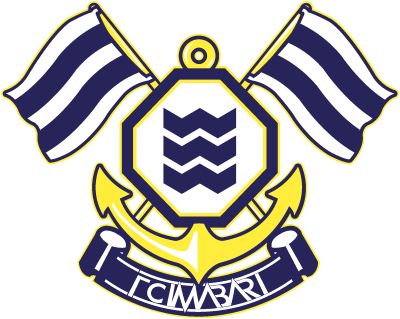

里山スタジアム新作イベント紹介
地域と繋がるスタジアム体験
里山スタジアムで毎試合開催される、趣向を凝らしたグルメフェアや地域連携イベントを紹介します。サッカー観戦だけでなく、スタジアムに一歩足を踏み入れた瞬間から始まる「最高の1日」の魅力を余すことなくお伝えします。

里山スタジアムで毎試合開催される、趣向を凝らしたグルメフェアや地域連携イベントを紹介します。サッカー観戦だけでなく、スタジアムに一歩足を踏み入れた瞬間から始まる「最高の1日」の魅力を余すことなくお伝えします。